Behaviour of an under reinforced conrete beam
Objective: To study the behavior of an under reinforced concrete beam in flexure.
Requirements before starting the experiment:
1. RC beam of the shown cross-section, cast at least 28 days before the experiment.
2. Four point loading setup
3. LVDT
4. Hydraulic Jack
5. Concrete of grade, (fck) = M25
6. Reinforcement of grade, (fy) = Fe 500
Dimensions of specimen
1. L = 2000 mm
2. Ll = 1800 mm
3. b = 150 mm
4. D = 200 mm
5. ASV = 2L - 8 mm Φ @ 100 c/c
6. Ast = 2-12 Φ = 226.19 mm2
Observed strength
1. Obs. mean cube strength of concrete (fcm) = 29.5 MPa
2. Obs. mean tensile strength of reinforcement (fym) = 565 MPa
PLACEMENT OF BEAM:
Choose the simply supported beam setup to be used in the experiment.
CLICK ON THE CORRECT IMAGE TO MOVE FORWARD
✔ ✗ 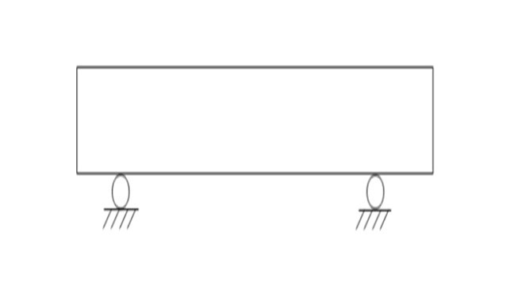 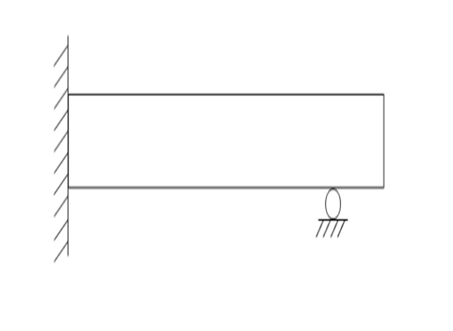

EXPERIMENTAL SETUP:
Choose the four point loading setup to be used in the experiment.
CLICK ON THE CORRECT IMAGE TO MOVE FORWARD
✔ ✗ 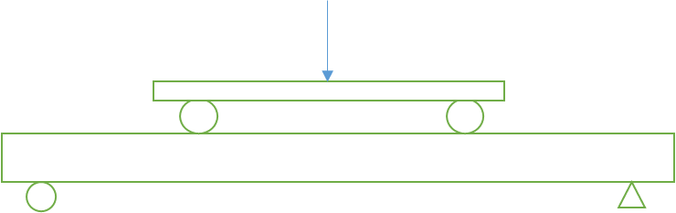 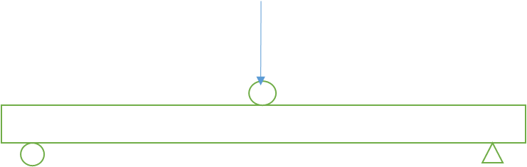
Steel reinforcement, same as used in beam specimen for tensile strength test. 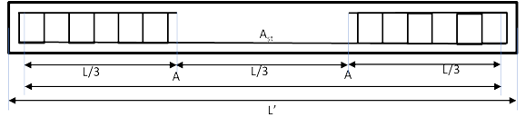
| L' | 2000 |
| L | 1800 mm |
| LAA | 600 mm |
| b | 150 mm |
| D | 200 mm |
| Cover | 25 mm (to shear reinforcement) |
| Ast | 2-12φ |
| Steel Grade | Fe500 |
| Concrete Grade | M25 |
of compressive strength.

| Specimen | Compressive strength(MPa) |
| 1 | 35.11 |
| 2 | 34.44 |
| 3 | 30.88 |
| Average Cube Strength (fcm) | 33.50 |

| Specimen | Yield strength (MPa) |
| 1 | 532 |
| 2 | 518 |
| 3 | 522 |
| Average Yield Strength (fym) | 524 |
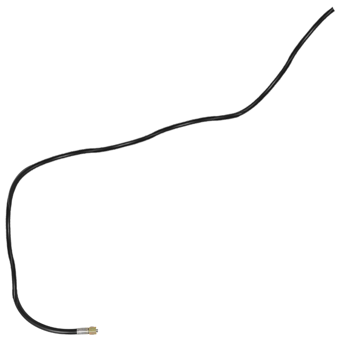


MEASURING DIMENSIONS OF THE BEAM Click on the measuring tape to measure the length of the beam. 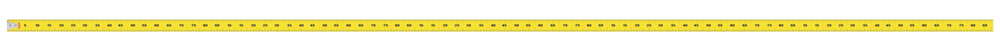

 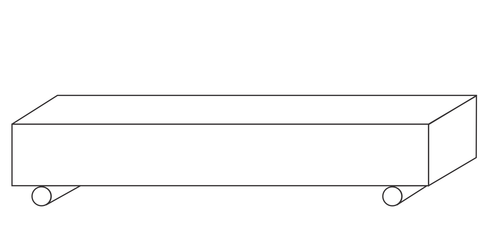
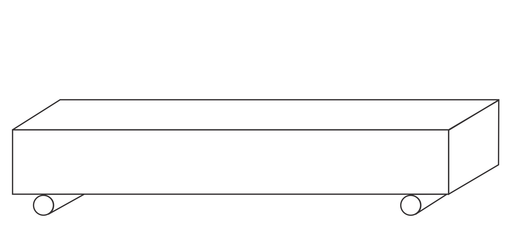
MEASURING DIMENSIONS OF BEAM Click on the measuring tape to measure width of the beam. 2012 mm
MEASURING DIMENSIONS OF BEAM Click on the measuring tape to measure the depth of the beam. 2012 mm 150 mm
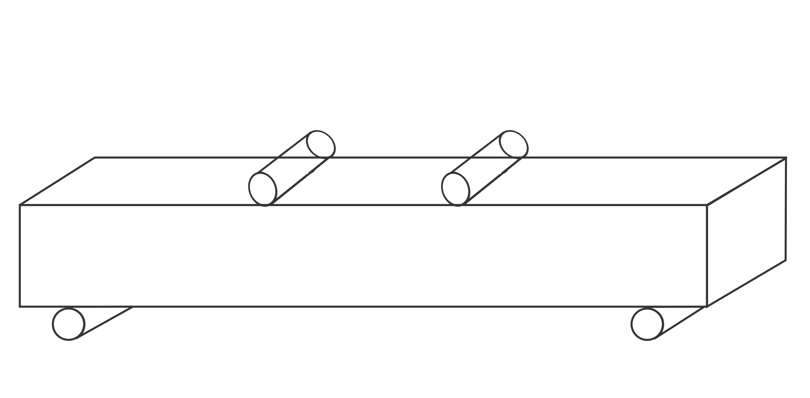
AB
BC
CD
 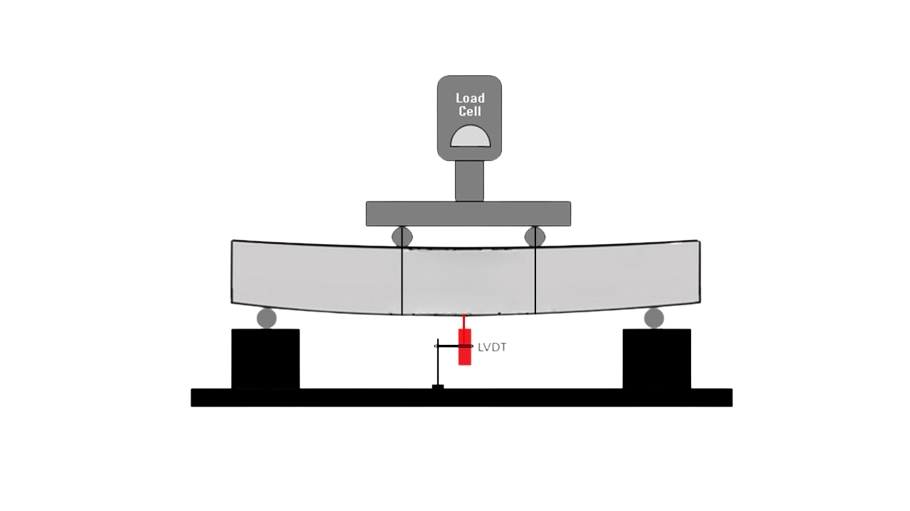
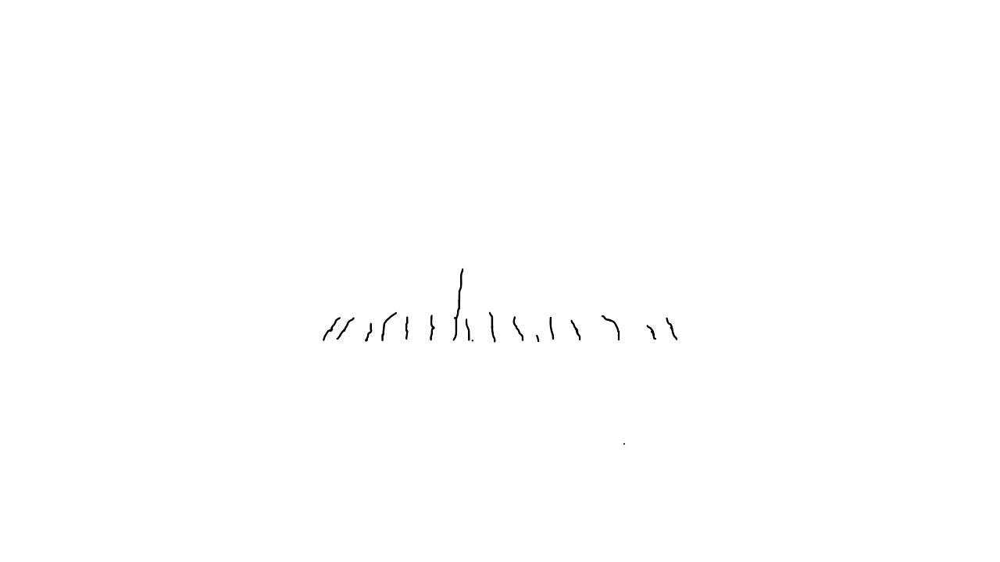
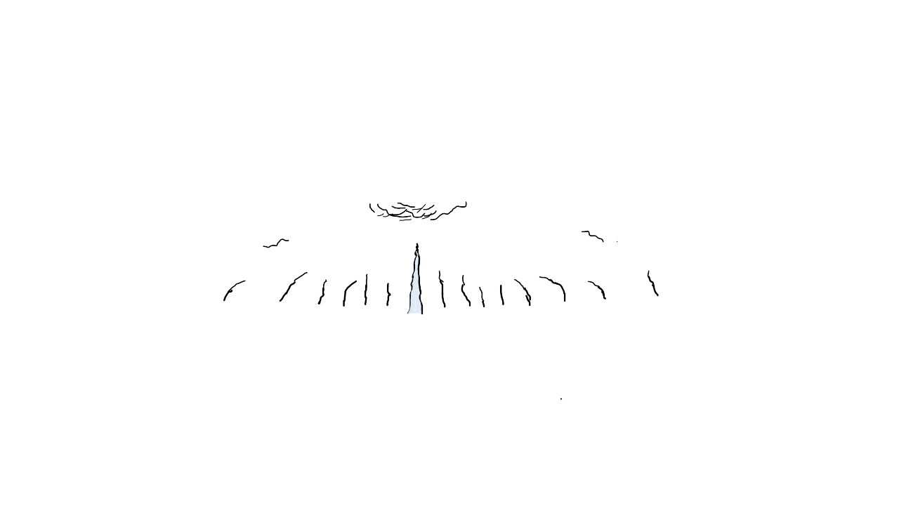
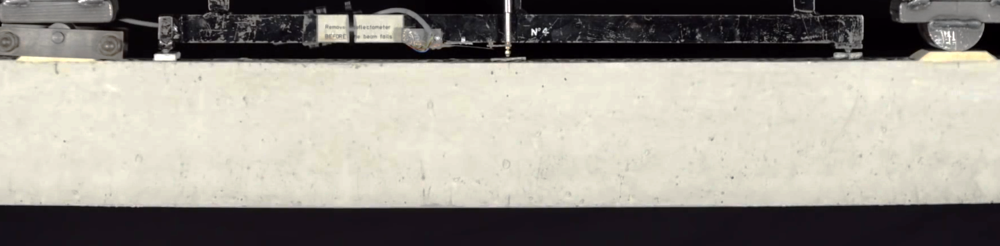
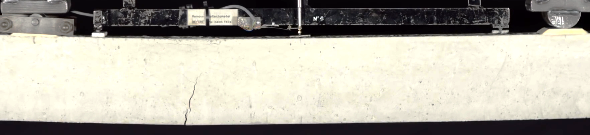
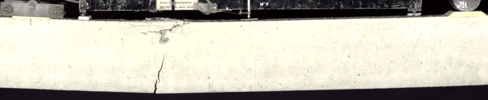
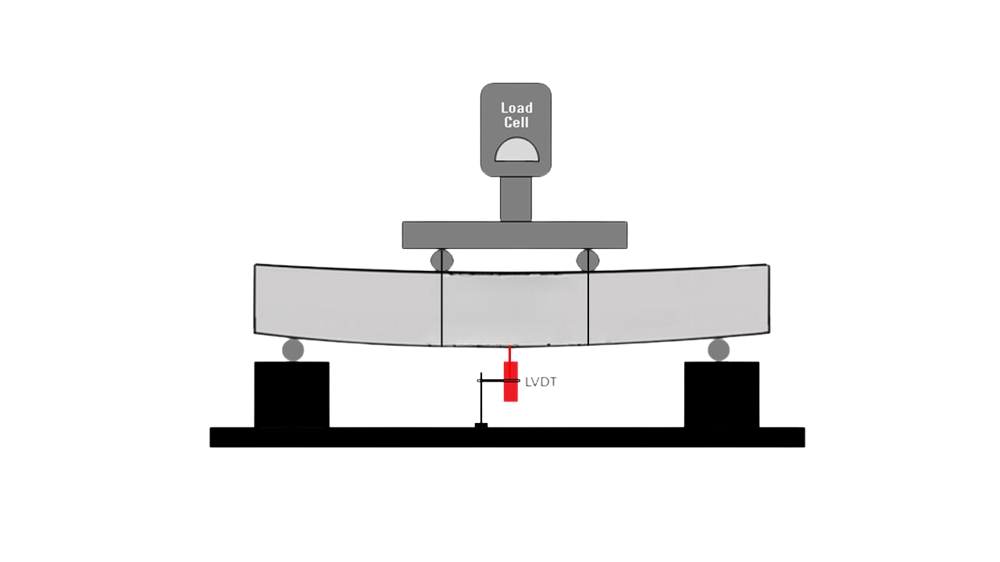
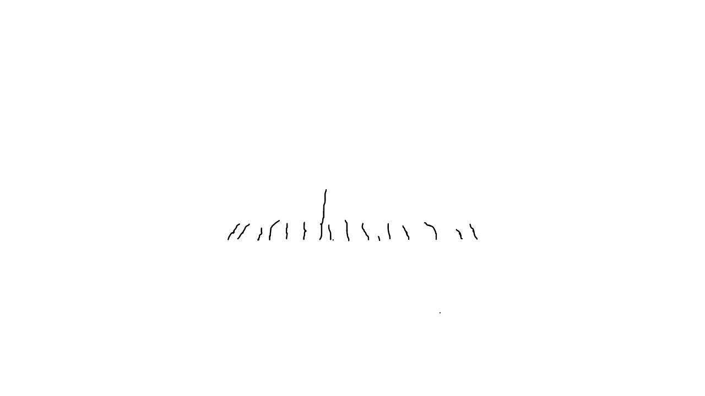
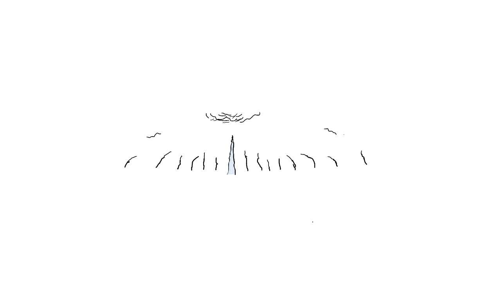
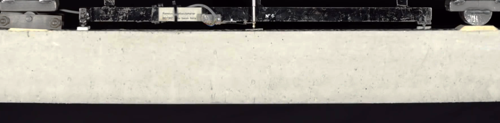
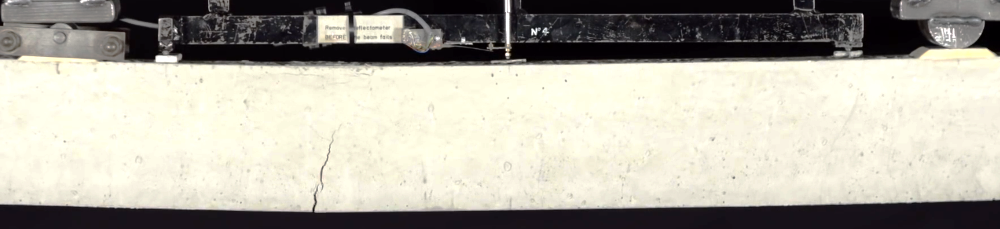
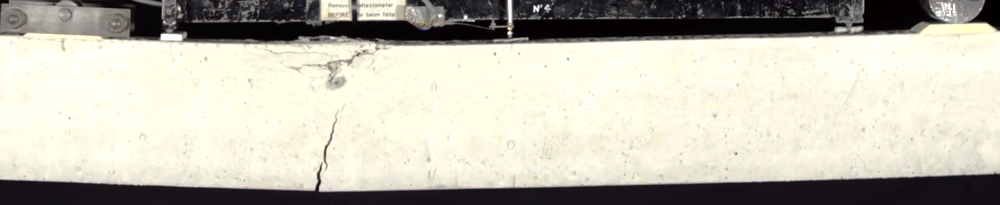

 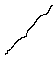
Shear Crack
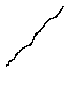
Shear Crack
 Flexure Shear Crack
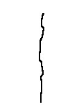
Flexure Crack
Flexure Shear Crack
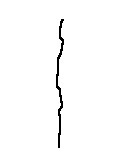
Flexure Crack
Record the load (from load cell) and mark the shear and flexure cracks.
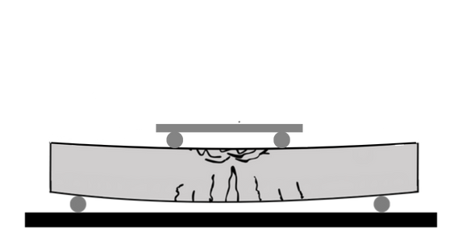
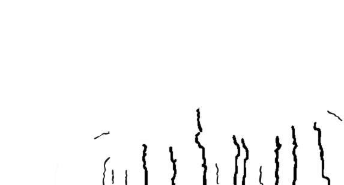
2. After marking once keep increasing the load till failure or the time when beam fails and shear crack appears as shown in next slide.
3. Note down the failure load as P
Graph
| Input1 | Input2 |
| Input3 | Input4 |
| Input5 | Input6 |
| Input7 | Input8 |
| Input9 | Input10 |
| Input11 | Input12 |
| Input13 | Input14 |
| Input15 | Input16 |
| Input17 | Input18 |
Select the observed failure crack.
Click any one image:
✗ ✔ 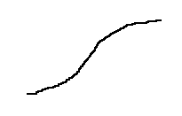 Left Cracks Right Cracks
2. Measure the distance La and Lb as shown below to determine the location of the shear crack.
 La
Lb
La =
Lb =
La
Lb
La =
Lb =
| Measured length of beam (Ll) | = 2012 mm |
| Measured width of beam (b) | = 150 mm |
| Measured depth of beam (D) | = 205 mm |
| Measured span of beam (L) | = 1800 mm |
| Cover | = 20 mm |
| Efective depth | = (205-20-8-16/2) = 169 mm |
| Load at failure | = 7.34 ton = 72.00 kN |
| Moment at failure = PL/6 = 21.60 kNm | |||||||
| (1) Design moment of resistance: $$ X_{u} = \frac{0.87 \, f_y \, A_{st}}{0.36 \, f_{ck} \, b} = 72 \, mm $$ |
Behaviour of the beam (Observed) = Under Reinforced, Ductile
Observed moment at failure = 21.60 kNm
Designed behaviour of the beam = Under Reinforced
Design Moment of reistance = 13.66 kNm
Predicted behaviour of the beam = Under Reinforced
Predicted Moment of resistance based on observed data = 18.76 kNm

- Grade of concrete = M25
- Mean cube strength of concrete = 33.5 MPa
- Grade of reinforcement = Fe500
- Mean yield strength of steel (MPa) = 524 MPa
- Estimated ultimate moment of resistance as per IS:456 (2000) = 18.32 kN-m
- Observed ultimate moment of resistance = 19.35 kN-m